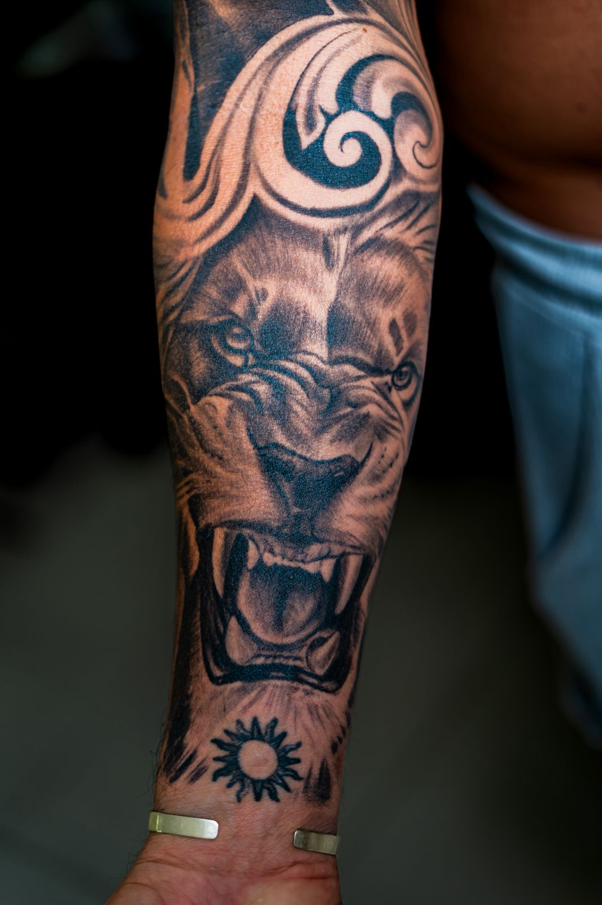
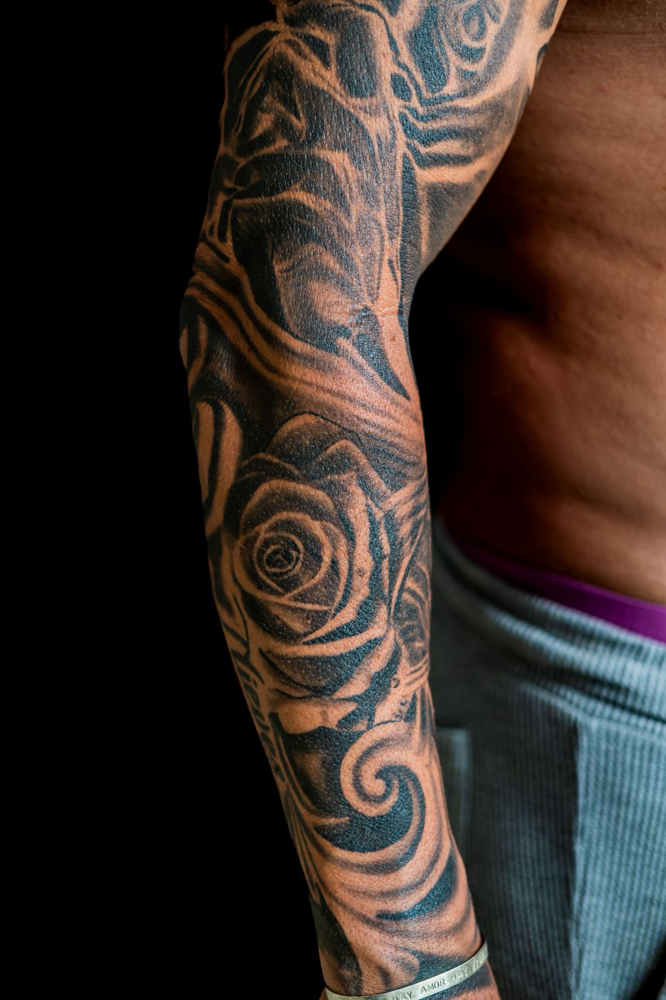
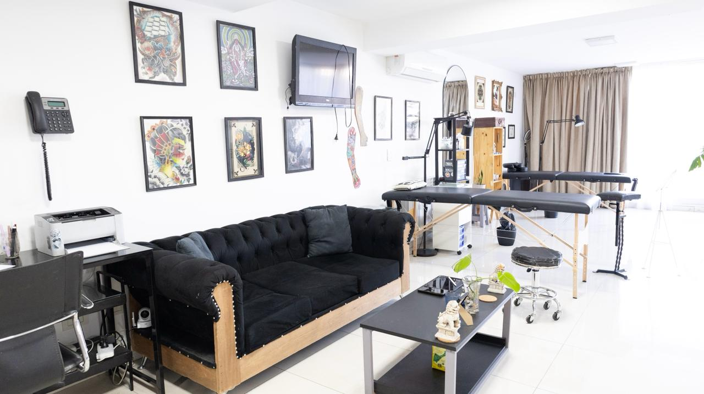
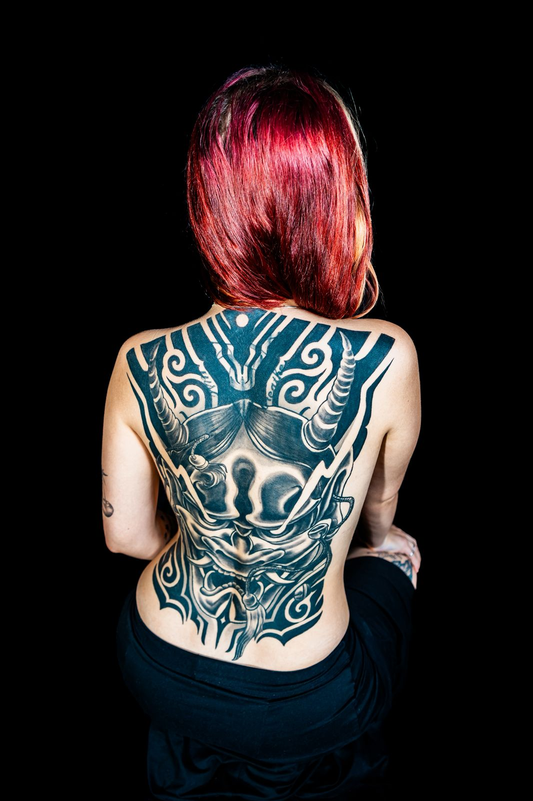
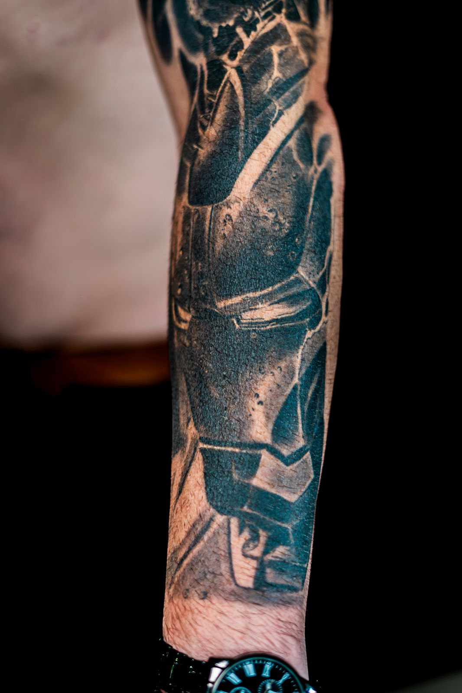
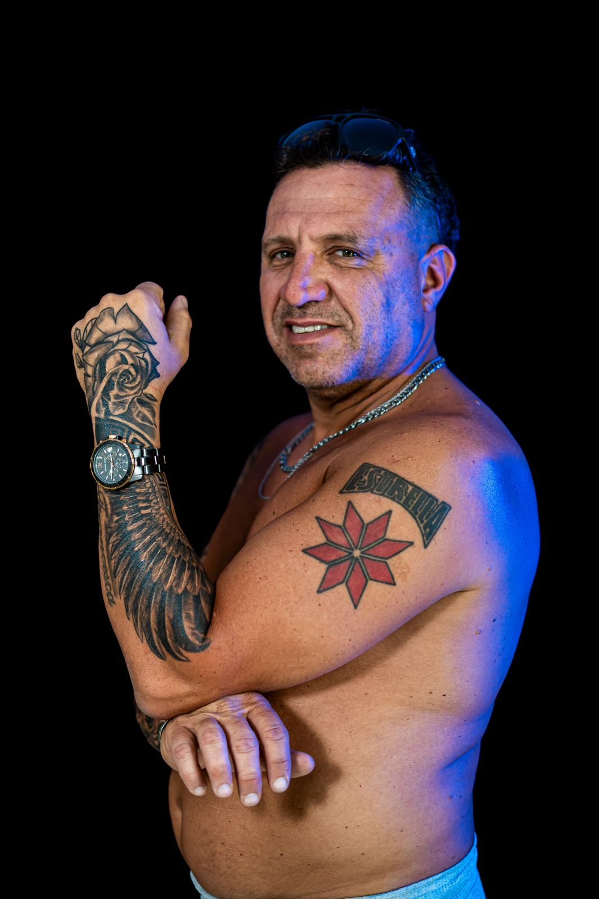
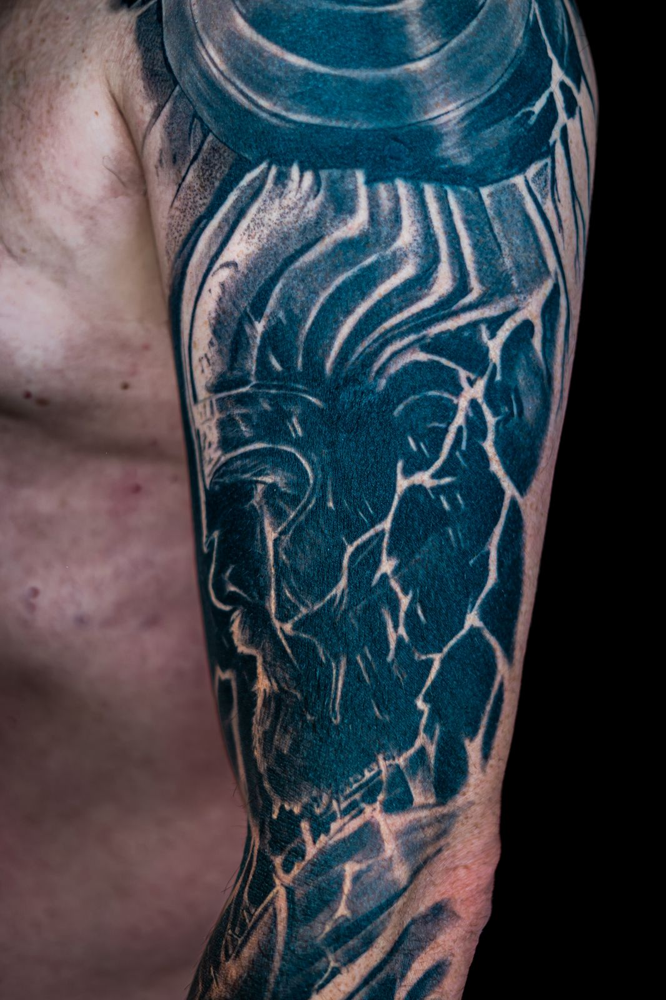

¡Hola! Mi nombre es Juan Ignacio, soy tatuador especializado en realismo black and grey. Trabajo piezas de alta complejidad con un enfoque técnico y artístico, desarrollando cada proyecto de forma personalizada, desde la idea inicial hasta el resultado final.
Enfoque en expresión, textura y fidelidad. Cada retrato se trabaja con especial atención al carácter y a la anatomía.

Black and Grey
Contrastes profundos, grises controlados y lectura precisa de luz y sombra. Piezas con profundidad, volumen y longevidad en la piel.

Mi Espacio
Trabajo en ARTERIA, un estudio minimalista y elegante ubicado en el centro de la ciudad, dentro de un hotel 4.5 estrellas. Un espacio pensado para desarrollar proyectos con comodidad, privacidad y foco absoluto en el proceso.

Proyectos de Gran Escala
Brazos completos, espaldas y composiciones integrales pensadas como una sola obra.

Trabajos Recientes



Empezá tu proyecto
Completá el formulario con tu idea, referencias y zona a tatuar. Voy a evaluar el proyecto y coordinar una consulta para desarrollarlo en detalle.